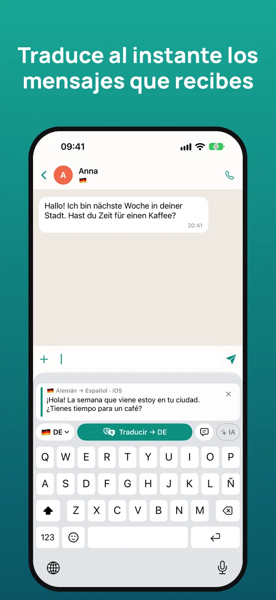
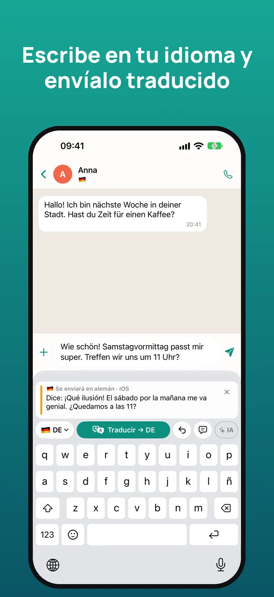
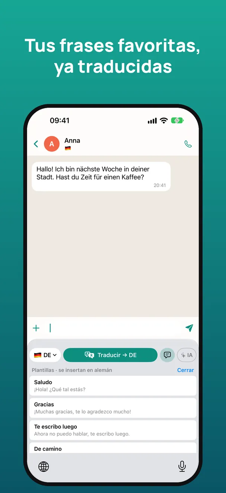
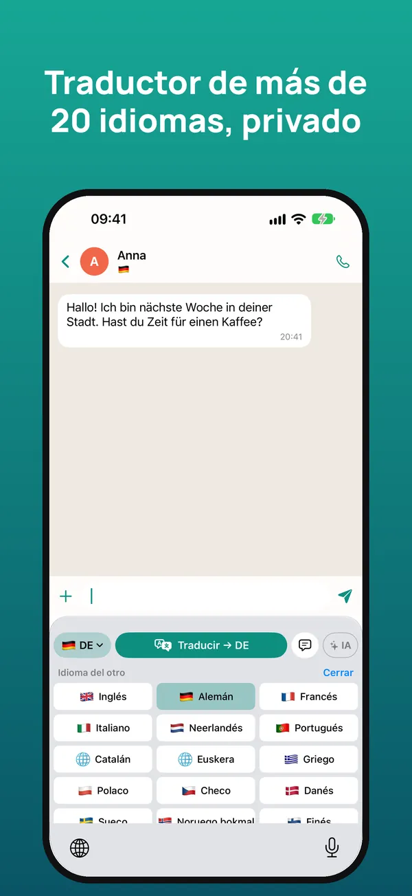

El teclado traductor para chatear en cualquier idioma
Lee traducido lo que te escriben y responde en tu idioma sin salir de WhatsApp, Telegram, Instagram ni de ninguna app. La traducción se hace en tu iPhone.
Prueba gratis 7 días · iPhone con iOS 26 o posterior

Cómo funciona
Mantén pulsado el mensaje que te llega y toca «Copiar». El teclado lo traduce al momento a tu idioma.
Escribe la respuesta como siempre y pulsa «Traducir»: se sustituye por la traducción, lista para enviar.
Debajo ves lo que dice tu mensaje en tu idioma, para enviarlo con total tranquilidad.



Todo lo que necesitas para hablar con cualquiera
Entiende los mensajes que recibes y responde en el idioma de la otra persona.
WhatsApp, Telegram, Instagram, Messenger, correo… Funciona donde puedas escribir.
Respeta el tono y el trato de cada idioma y tiene en cuenta la conversación.
Traducción de Apple en el propio iPhone: sin conexión, sin anuncios, sin rastreo y sin cuentas.
Conecta tu propia clave de Claude, Gemini o ChatGPT para traducciones aún más naturales.
Plantillas que se insertan ya traducidas y un glosario para tus nombres y expresiones, con iCloud.
Más de 20 idiomas
Español, inglés, alemán, francés, italiano, portugués, neerlandés, catalán, euskera, griego, polaco, checo, danés, sueco, noruego, finés, rumano, húngaro, ucraniano, ruso, turco, árabe, chino y japonés.
Precio
Escribir con el teclado es siempre gratis. Cancela cuando quieras desde los Ajustes de tu iPhone.
Preguntas frecuentes
¿Funciona con WhatsApp?
Sí. Funciona en cualquier app en la que escribas: WhatsApp, Telegram, Instagram, Messenger, Gmail, LinkedIn y más.
¿Es gratis?
Tienes 7 días gratis. Después, 2,99 € al mes o 19,99 € al año, o 39,99 € una sola vez. Escribir con el teclado es siempre gratis.
¿Por qué pide «Permitir acceso total»?
iOS lo exige para que el teclado pueda leer el mensaje que copias, usar la IA si la activas y compartir los ajustes con la app. No guarda ni envía lo que escribes.
¿Funciona sin conexión?
Sí. Con la traducción de Apple, una vez descargados los idiomas, se traduce en el propio iPhone sin conexión.
¿Qué idiomas traduce?
Más de 20, entre ellos inglés, alemán, francés, italiano, portugués, neerlandés, chino y japonés.
¿Hay versión para Android?
Por ahora solo está disponible para iPhone con iOS 26 o posterior.
Empieza en un minuto
- Instala la app y abre la guía de inicio.
- En Ajustes de iOS → Teclados, activa el teclado y «Permitir acceso total».
- En cualquier chat, mantén pulsado 🌐 y elige el teclado.
- Copia el mensaje recibido para leerlo traducido; escribe en tu idioma y pulsa Traducir.
¿Necesitas ayuda? Escríbenos a soporte@sherpastime.com.